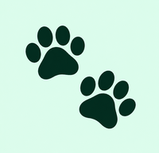

En développementVetCases
Plateforme collaborative pour les étudiants vétérinaires : organiser les connaissances et simplifier les révisions.
Python · FastAPI · Angular · MySQL · Docker
Développeur Python & full stack · Clermont-Ferrand / Toulouse
Je conçois des applications métier, des API et des automatisations qui font gagner du temps aux équipes. Diplômé d'un Master en architecture des systèmes d'information, je suis aujourd'hui développeur chez Akkodis. J'intègre l'IA à ma façon de coder pour gagner en efficacité et en rapidité.

En développementPlateforme collaborative pour les étudiants vétérinaires : organiser les connaissances et simplifier les révisions.
Python · FastAPI · Angular · MySQL · Docker
La todo list qui simplifie votre quotidien : avancez par petites victoires. Free & Open source.
Node.js · Express · SQLite · Tailwind
2026 —
Application web de mesure de l'empreinte carbone à l'échelle de l'entreprise (projets, collaborateurs, structures), pour intégrer l'impact carbone dans les réponses aux appels d'offres.
Python · FastAPI · Vue.js · PostgreSQL · Azure DevOps
2024 — 2026
Application de gestion des grilles tarifaires utilisée par 20 commerciaux. Intégration automatisée de milliers de lignes dans l'ERP, avec contrôles qui détectent les erreurs avant facturation.
Facturation des grilles : de plusieurs jours à quelques minutes.
Également : passerelle Python modulaire reliant les applications métier à Databricks et Azure.
Python · Flask · pytest · SQL Server · Databricks · Azure
2023 — 2024
Refonte du site e-commerce : parcours d'achat simplifié, nouvelles fiches produits et configurateur sur mesure.
+30 % de commandes par mois et panier moyen en hausse.
PHP · JavaScript · MySQL · Bootstrap · storetoile.fr ↗
2023
Pipeline de reconnaissance de gestes à partir des capteurs d'un bracelet connecté : collecte, annotation, nettoyage, puis classification avec auto-sklearn et validation croisée.
90 % de bonnes prédictions à l'évaluation finale.
Python · pandas · NumPy · auto-sklearn
Musculation, course à pied, moto et voyages (Islande, Québec, Floride). J'aime aussi lire ; en ce moment, Tout sur l'économie (ou presque) de Gilles Mitteau.